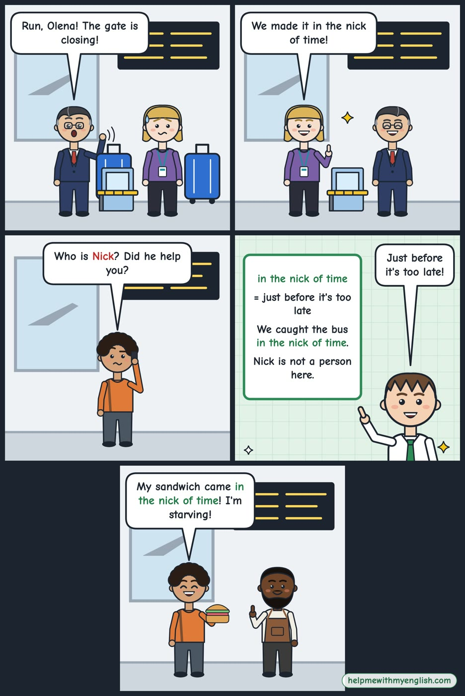

in the nick of time
Just before it was too late.
We got to the gate in the nick of time.
Tip: Use it after a verb to say something happened at the last possible moment, usually with relief: 'arrived / finished / stopped it in the nick of time'.
Hear it in conversation
Workbook
1. What does it mean?
In this conversation, what does 'in the nick of time' mean?
2. Fill the gap
The taxi driver took a shortcut, so Kofi reached the station to catch his train.
3. Choose the best reply
Diego: Did you manage to stop the printer before it ran out of paper in the middle of the job?
4. Your turn: speak
Tell me about a time you almost missed something important, but things worked out.
Show an example answer
Last year I was heading to a job interview and my bus broke down halfway there. I jumped out, ran to the nearest tram stop, and got to the office in the nick of time. I was out of breath, but I still got the job.
Answer key: in the nick of time
- 1. A. Just before it was too late
- 2. in the nick of time
- 3. C. Yes, I refilled it in the nick of time, and the last page came out fine.
- 4. Example: Last year I was heading to a job interview and my bus broke down halfway there. I jumped out, ran to the nearest tram stop, and got to the office in the nick of time. I was out of breath, but I still got the job.
See it in a comic
